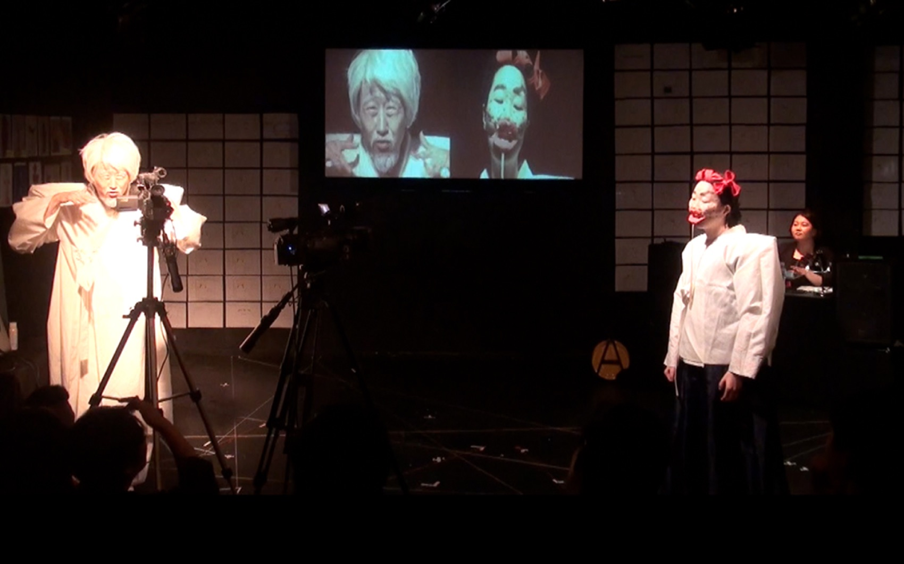
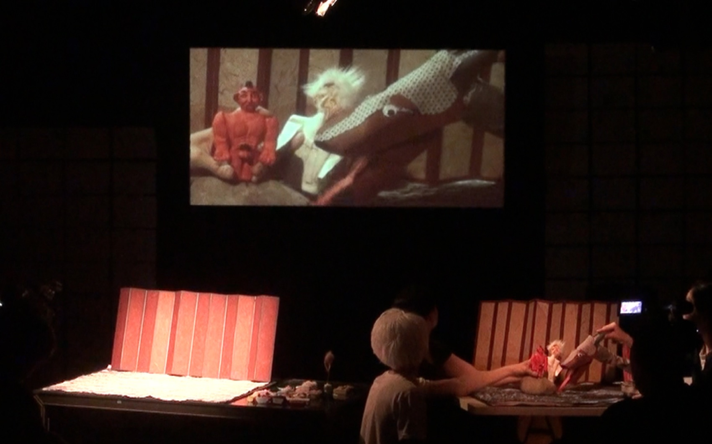
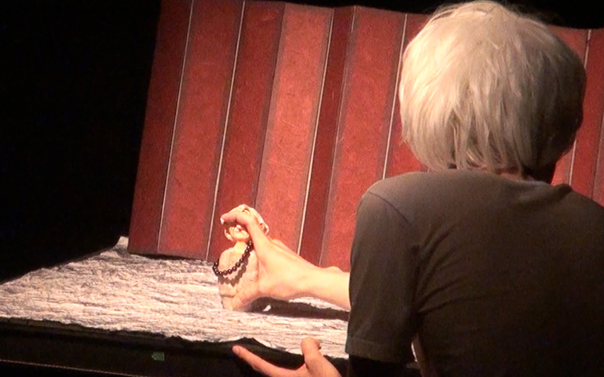
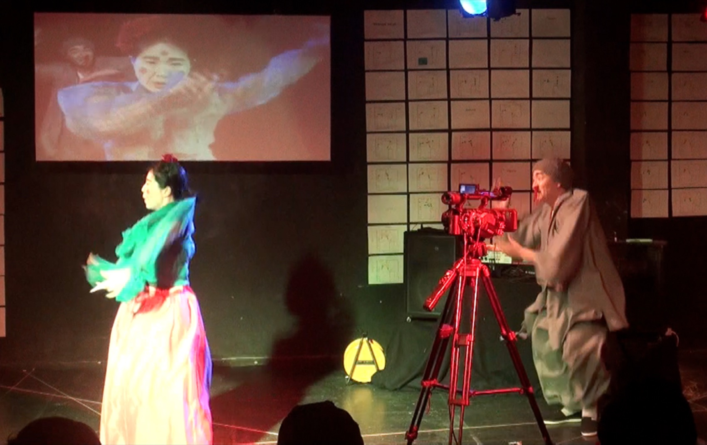
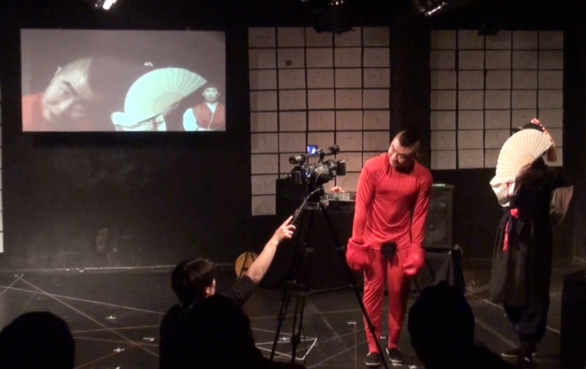
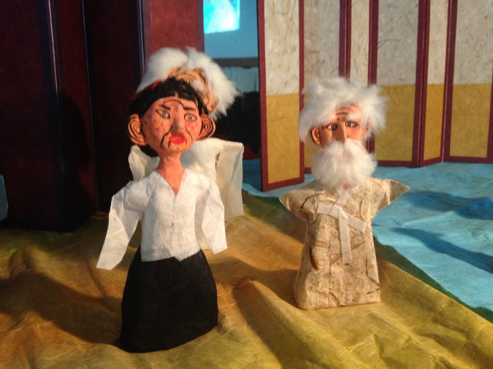
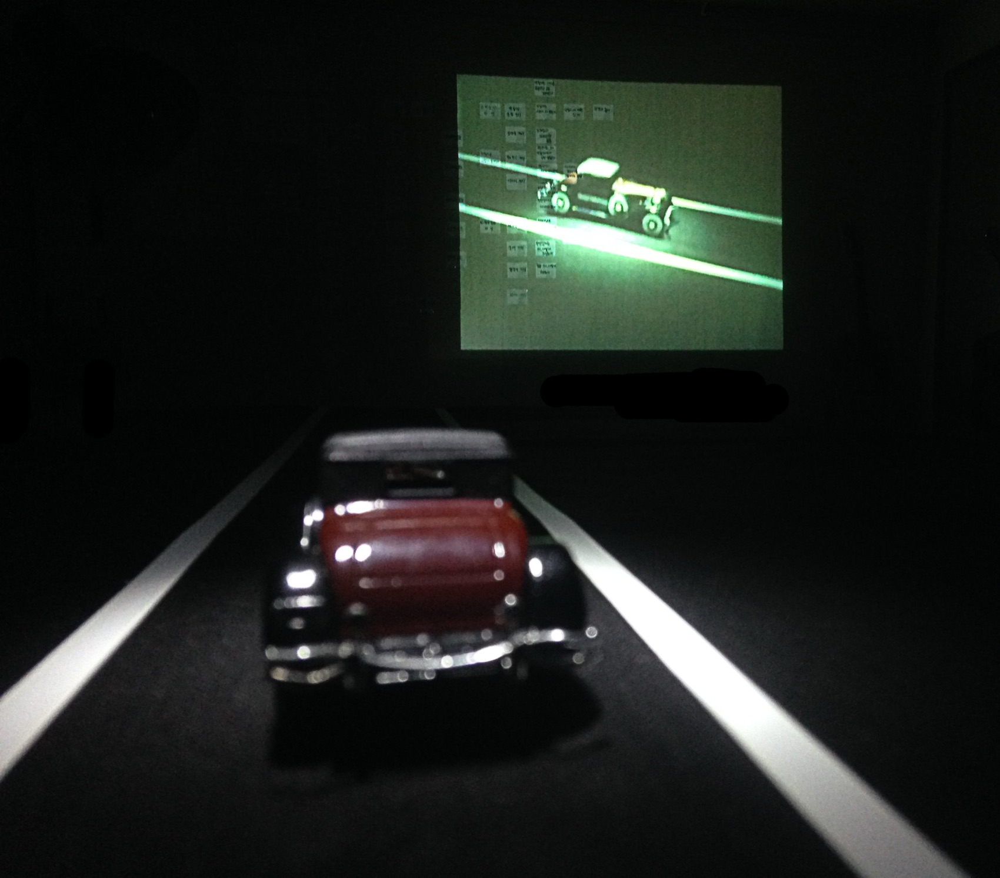
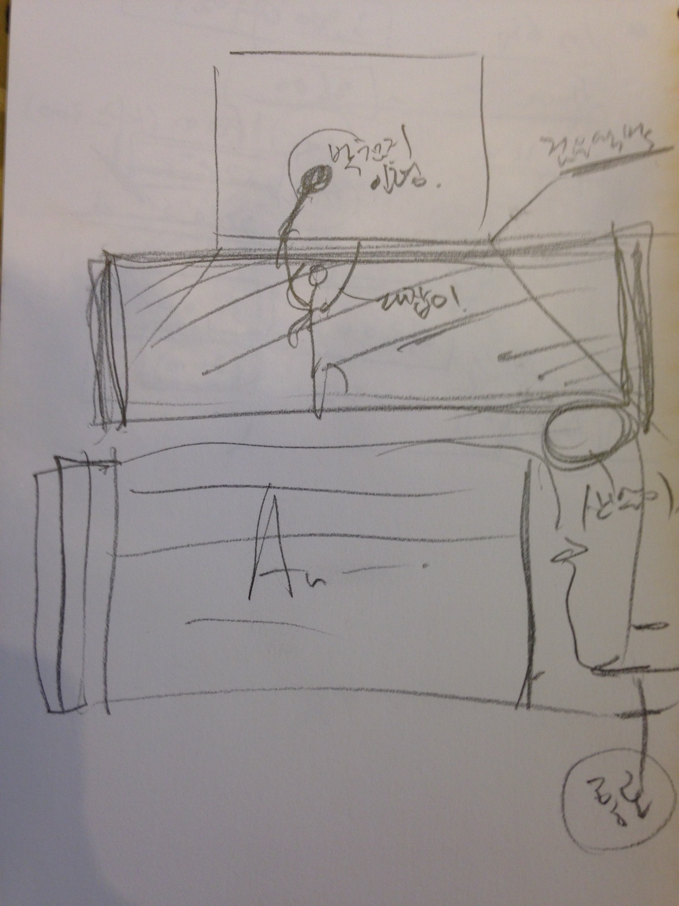

Performance — 2014
Digital Marionette꼭두각시놀음 조종자편 · 극단거미
전통인형극 꼭두각시놀음을 미디어로 다시 확장해, 위안부 할머니의 이야기를 담아낸 대안적 키노드라마.
An alternative kino-drama that extends the traditional puppet play Kkokdugaksi-noreum through media — to carry the story of the ‘comfort women.’
‘꼭두각시놀음 조종자편’은 1964년 중요무형문화재 제3호로 지정된 전통인형극 꼭두각시놀음과 발을 인형 삼는 발탈을 소재로 한 재창작입니다. 심우성 채록본에 나타나는 건사형 이야기 구조를 참수형 이야기 구조와 결합해 다시 썼고, 장면과 등장인물의 은유와 상징을 재설정했습니다. 현실 세태를 비꼬는 풍자극의 골격 위에서, 이 공연이 끝내 이야기하려는 것은 위안부 할머니의 문제입니다.
인형극의 핵심 원리는 조종자와 인형 간의 관계에 있습니다. 이 작품은 꼭두각시놀음의 인형극적 표현을 확장하고, 이것을 미디어로 다시 확장합니다. 대잡이가 막대와 주머니를 통해 인형을 조종하듯, 카메라와 스크린이라는 미디어가 인형을 매개합니다. 여기서 중요한 것은 조종자가 인형에 생명을 불어넣어 주는 것입니다. 인형·미니어처 오브제·소품을 영화적 상상력과 결합해, 연극적 표현과 영화적 표현이 만나는 새로운 형식의 대안적 키노드라마를 실험했습니다.
‘Digital Marionette’ reworks Kkokdugaksi-noreum — Korea’s traditional puppet play, designated Important Intangible Cultural Property No. 3 in 1964 — together with Baltal, the art of puppetry performed with the foot. Rewritten from the Shim Woo-seong transcription by joining its two narrative structures, with the metaphors of scenes and figures reset, the piece keeps the skeleton of a satire mocking the ways of the world — while what it finally speaks of is the story of the ‘comfort women.’ The core principle of puppetry lies in the relation between manipulator and puppet: the work extends the puppet play’s expression, then extends it again through media. As the daejabi manipulates the puppet through rod and pouch, camera and screen mediate the puppet in turn — and what matters is that the manipulator breathes life into the figure. Combining puppets, miniature objects and props with cinematic imagination, the production experimented with a new, alternative form of kino-drama where theatrical and cinematic expression meet.
- 연출·재구성·영상
- Direction, adaptation, video
- Kim Jae Min 김제민
- 꼭두각시놀음 자문
- Kkokdugaksi advisor
- 김학수
- 드라마투르그
- Dramaturg
- 홍석진
- 음악감독
- Music
- 김병제
- 오브제·미니어처
- Objects & miniatures
- 김세진
- 조명
- Lighting
- 성미림
- 조연출
- Assistant director
- 김민지
- 출연
- Cast
- 조판수 · 이선희 · 신용숙 · 이준규 · 김보라 · 심우섭 · 양효정
- 키워드
- Keywords
- puppet & manipulator · kino-drama · tradition · comfort women
연출노트 — 인형이 가지고 있는 연극성
Director’s note — the theatricality of the puppet
연출의 중심개념은 곧 생명의 개념이다
The central concept of directing is the concept of life
인형극은 조종자가 물체에 지나지 않는 인형을 조종해 생명을 불어넣어 배우가 되게 하는 작업입니다. 그것은 상징화, 의미화의 작업이기도 합니다. 인형은 조종자의 화신이 됩니다. 인형이 조종자 자신에게는 이상적인 신체가 되기에, 인형조종자는 이상적인 배우가 될 수 있습니다.
인형은 오직 인형조종자의 대리인으로서만 살 뿐입니다. 그의 생명은 살아지는 것이 아니라 의미되는 것이며, 조종자가 인형에게 생명을 불어넣어 주지 않으면 인형은 ‘살지’ 못합니다. 그러므로 인형극에서 연출의 중심개념은 곧 생명의 개념입니다. 인형과 조종자라는 이원성 — 그것이 인형극의 특성이고, 이 작품이 ‘조종자편’이라는 부제를 단 이유입니다.
Puppetry is the work of a manipulator taking a figure that is no more than an object and breathing life into it until it becomes an actor — a work of symbolisation, of making-meaning. The puppet becomes the manipulator’s incarnation; because the puppet is an ideal body for its manipulator, the manipulator can become an ideal actor. Yet the puppet lives only as the manipulator’s deputy: its life is not lived but meant, and unless the manipulator breathes life into it, the puppet cannot ‘live.’ In puppetry, therefore, the central concept of directing is the concept of life itself. The duality of puppet and manipulator is the defining trait of the form — and the reason this work bears the subtitle ‘the Manipulator’s Chapter.’
- 전통의 데자뷔
- Déjà vu of tradition
- 전통을 시공간의 개념으로 바라본다. 하나의 시선으로 바라보는 두 개의 시공간, 그 시선들의 간극과 경계에서 발생하는 데자뷔적 연상이 작품의 모티브가 된다. 무대 형상화는 일종의 주관적 복원화 과정 — 그 과정에서 발생하는 모든 소리와 이미지가 표현재료가 된다.
- Tradition is seen as a concept of space-time: two space-times held in a single gaze, and the déjà vu-like associations arising in the gaps between them become the work’s motif. Staging is a subjective act of restoration — every sound and image the process produces becomes material.
- 전통 연희의 형식
- The traditional form
- 산받이(인형과 대화하는 해설자), 잽이(악사), 대잡이(조종자)가 등장하는 막대기 인형놀음. 골계미의 해학을 지닌다.
- A rod-puppet play performed with the sanbaji (interlocutor), jaebi (musicians) and daejabi (manipulator), carrying the humour of grotesque beauty.
- 연출의 글
- From the director’s statement
- 꼭두각시놀음의 서사구조를 바탕으로 사회적 불륜, 조강지처불하당, 부패권력, 자본의 야만성 등을 유쾌하게 그려내고자 했으며, 꼭두와 대잡이(조종자) 사이의 매개와 표현, 대잡이의 조종 과정 등을 무대화하는 데 주목했다.
- Building on the narrative structure of Kkokdugaksi-noreum, the production set out to draw — with humour — social infidelity, cast-off first wives, corrupt power and the savagery of capital, while focusing on staging the mediation between puppet and daejabi, and the process of manipulation itself.
구성 — 2마당 7거리를 4개의 마당으로
Structure — two madang, seven geori, remade as four madang
전통마당 — 배우마당 — 대잡이마당 — 공구드릴마당
Tradition — Actor — Manipulator — Power-drill
원전의 기본 구성인 2마당(박첨지 마당·평안감사 마당) 7거리를 네 개의 마당으로 재구성했다. 인형에서 배우로, 배우에서 조종자로, 조종자에서 공구로 — 조종의 주체가 점점 드러난다.
The source’s two madang (Old Man Park’s and the Governor’s) and seven geori were recomposed into four madang. From puppet to actor, actor to manipulator, manipulator to power tool — the agent of manipulation steps steadily into view.
01
박첨지 유람거리
Old Man Park’s Outing
박첨지는 팔도강산을 유람하던 중 꼭두패가 논다는 소식을 듣고 구경 나온다.
Touring the eight provinces, Old Man Park hears a puppet troupe is playing and comes to watch.
02
피조리거리
The Pijori Scene
피조리와 상좌는 뒷산에서 바람이 나고, 홍동지가 나와 모두 쫓아버린다.
Pijori and the young monk carry on behind the hill until Hongdongji storms out and drives them all away.
03
꼭두각시거리
The Kkokdugaksi Scene
몇 해 만에 박첨지와 본처 꼭두각시가 만난다. 첩 덜머리집이 생겨나고, 덜머리집은 꼭두각시를 공격한다. 꼭두각시가 중이 되어 집을 떠나자 박첨지는 속이 시원해 운다.
After years apart, Old Man Park meets his first wife Kkokdugaksi — but there is now a concubine, who attacks her. When Kkokdugaksi leaves to become a nun, Park weeps with relief.
04
매사냥거리
The Falconry Scene
평안감사는 홍동지에게 길 치도를 나무란 후, 몰이꾼으로 삼아 매사냥을 한다. 사냥이 끝나자 노잣돈이 떨어졌으니 꿩을 팔아오라고 한다.
The Governor scolds Hongdongji over the road, presses him into service as a beater for the falcon hunt — then, out of travel money, orders him to go sell the pheasant.
05
상여거리
The Bier Scene
평안감사가 낮잠을 자다 개미에게 물려 즉사했다는 소식이 들리고, 상여가 등장한다. 홍동지는 아랫배로 상여를 밀고 나간다.
Word comes that the Governor, napping, was bitten by an ant and died on the spot. The bier enters — and Hongdongji pushes it along with his belly.
06
이시미거리
The Isimi Scene
이시미가 청노새를 비롯해 꼭두각시, 표생원, 홍백가, 영노 등 많은 사람들을 잡아먹는다. 홍동지가 등장해서 박첨지를 구해주고, 이시미를 무찌른다.
The serpent Isimi devours the blue mule, Kkokdugaksi, Pyo Saengwon, Hongbaekga, Yeongno and more — until Hongdongji arrives, saves Old Man Park and slays it.
07
절 짓고 허는 거리
Building and Unbuilding the Temple
죽은 사람의 명복을 빌며 절을 짓고, 다시 절을 허문다.
A temple is built to pray for the repose of the dead — and then taken down again.
과정 — 워크샵과 공동창작
Process — workshop and co-creation
미니어처에서 무대까지
From miniature to stage
작품은 워크샵과 공동창작의 과정을 거치며 구체적인 소재와 장면들을 골라 이야기를 발전시켜 갔습니다. 미니어처 워크샵에서는 장난감 자동차와 프로젝션으로 ‘미디어가 매개하는 조종’의 원리를 실험했고, 배우들은 한지와 헝겊으로 박첨지와 꼭두각시 인형을 직접 만들었습니다. 대본은 2014년 2월 14일부터 3월 10일까지 열두 차례, 연출대본은 공연 직전까지 일곱 차례 고쳐 썼습니다.
The piece grew through workshops and co-creation, choosing concrete materials and scenes as it went. A miniature workshop tested the principle of ‘manipulation mediated by media’ with toy cars and projection; the actors built the Old Man Park and Kkokdugaksi puppets themselves from hanji paper and cloth. The script went through twelve drafts between 14 February and 10 March 2014, the director’s score through seven more before opening.
- 키노시노그라피
- Kino-scenography
- 인형·미니어처·소품을 실시간 카메라로 촬영해 스크린에 투사하는 ‘키노그라피(kino-graphy)’적 접근. 정형화된 피규어나 인형이 가지는 느낌과, 비정형적인 오브제의 느낌과 질감은 다르다 — 그 차이가 화면 위에서 새로운 스케일의 무대가 된다.
- A ‘kino-graphy’ approach: puppets, miniatures and props filmed live and projected. A standardised figure feels different from an unformed object — and that difference, on screen, becomes a stage of another scale.
공연 기록 — 연극실험실 혜화동1번지, 2014
Performance record — Theater Laboratory Hyehwa-dong 1st, 2014






